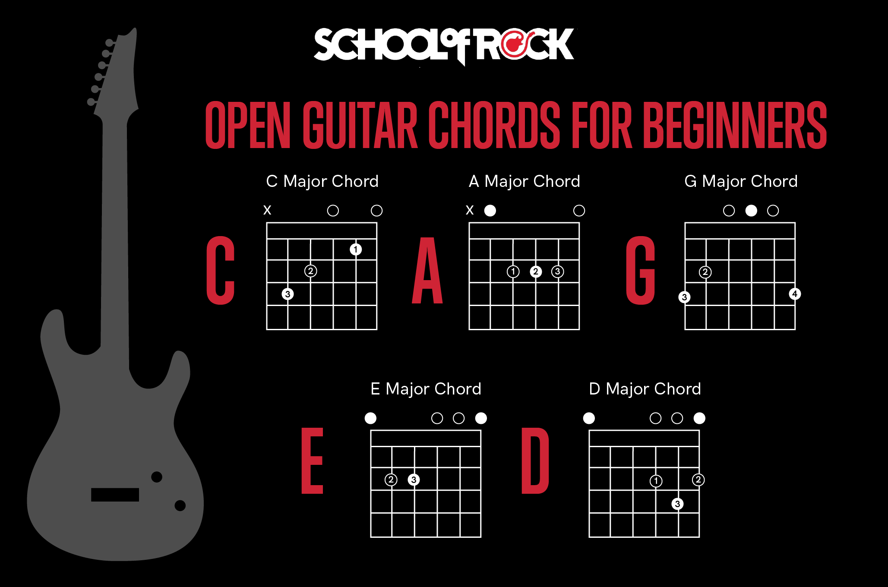

Започваме с акордите
Акордите са едни от най-важните неща, които ще научиш, докато свириш на китара. С тях можеш да създаваш музика и да свириш песни. Не се притеснявай, ако първоначално ти се струва трудно – с малко практика ще стане лесно и забавно!
Какво е акорд?
Акордът е комбинация от няколко звука, които се свирят едновременно. На китарата това означава да поставиш пръстите си на определени места по струните и да ги удариш с перцето или пръстите си.
Основни акорди за начинаещи
Нека започнем с няколко прости акорда, които са основата на много песни:
- Акорд Ми мажор (E): Постави пръстите си на втора и трета струна в първо и второ прагче.
- Акорд Ла минор (Am): Това е малко подобен на Ми мажор, но започваш от четвъртата струна.
- Акорд Ре мажор (D): Постави пръстите си на първите три струни в различни прагчета, за да създадеш този акорд.
Как да сменяш акорди?
Една от най-важните умения при свиренето на китара е да можеш бързо и плавно да сменяш акорди. Започни бавно и практикувай следното:
- Избери два акорда (например Ми мажор и Ла минор).
- Свири първия акорд, след това премести пръстите си бавно към втория.
- Повтори това няколко пъти, докато движенията ти станат по-гладки.
Малки песни за упражнения
Сега, след като знаеш няколко акорда, можеш да опиташ да свириш песни. Ето две лесни песни за упражнение:
1. Песен: "Happy Birthday"
Акoрди: Ми (E), Ла (A), и Ре (D)
Стъпки:
- Започни с акорд Ми и удари струните два пъти.
- Смени на акорд Ла и удари три пъти.
- Завърши с акорд Ре, като го изсвириш четири пъти.
- Повтори тези стъпки, докато песента прозвучи правилно.
2. Песен: "Twinkle, Twinkle, Little Star"
Акoрди: До (C), Сол (G), и Фа (F)
Стъпки:
- Сложи пръстите си за акорд До и свири струните два пъти.
- Премини към Сол и удари три пъти.
- Завърши с Фа, свири четири пъти.
- Повтори тази последователност няколко пъти.
Заключение
Сега вече знаеш основите на акордите и можеш да свириш две песни! Не се отказвай, ако първоначално не се получава. Продължавай да се упражняваш и скоро ще можеш да свириш още много песни!